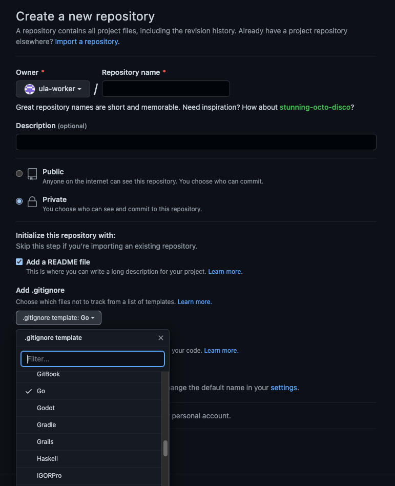
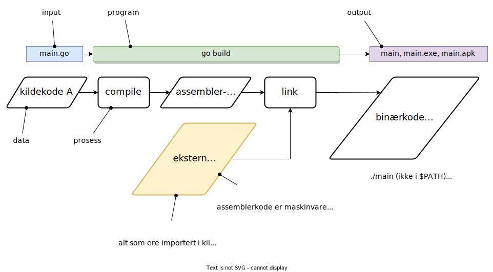

Seminar I: CLI, Git, Go, TDD
Aktivitetene på seminaret I er:
- Installere Git og Go programmeringsmiljø.
- Øve på kommandolinje (CLI).
- Lage en privat (ikke "public") repository på Github for denne oppgaven.
- Øve på å jobbe mot Github fra kommandolinje.
- Lage Go modul og skrive og utføre et enkelt program i Go.
- Gjøre seg kjent med test-drevet utvikling og bruke testrammeverket i Go.
1 Plan for seminaret
| Plan for seminar I | |||
|---|---|---|---|
| Dato | Tid | Aktivitet | Godkjenningskrav |
| 30.01 | 8:15 - 8:30 | Presentajon av arbeidsmetode | |
| 8:30 - 9:00 | Vi danner adskilte grupper for de som har utfordringer med installasjon og konfigurasjon av programvaren på sin platform. De som har fått sin datamaskin konfigurert, oppfordres til å bidra til at andre får det gjort. | Organisere tematiske stasjoner (Installasjon, CLI, Git, Go, Testing). Fokuset i dette tidsvinduet skal være på installasjon og konfigurasjon av programvare på spesifikke platformer, og at alle har satt opp sitt utviklingsmiljø korrekt. Prioritet er følgende: Git (git version), Go (go version og go env GO111MODULE) må fungere (oppgavesett #1) |
|
| 30.01 | 9:15 - 9:30 | Presentasjon av CLI (Command Line Interface). Absolutt sti, relativ sti, hjemmemappe, cd, ls (dir), rm (del), mkdir (md), cp (copy). | |
| 30.01 | 9:30 - 10:00 | CLI (oppgavesett #2) | Lage en sti på sin platform i sin hjemmemappe. Kunne finne en fil, som vises i "explorer" på kommandolinje. Kunne lagre en fil fra en editor til en spesifikk sti. Kunne slette filer og mapper. Kunne kopiere filer og mapper. |
| 30.01 | 10:15 - 11:00 | Fortsetter med CLI | |
| 30.01 | 11:15 - 11:30 | Presentasjon av Git | Kort gjennomgang av arbeidsflyt. |
| 30.01 | 11:30 - 12:00 | Git (oppgavesett #3) | Bruke ferdighetene fra forrige oppgaven om administrasjons av filer og mapper på egen datamaskin fra kommandolinje. Lage en private repository i Github. Kunne laste ned fil fra Internett på kommandolinje. Kunne gjennomføre en syklus av oppdateringer, "staging", "commiting" og "pushing" på kommandolinje. Ressonere hva om status etter hver operasjon. Finne ut hvor all administrasjon av versjoner til filene lagres. Kjenne til git pull. |
| 03.02 | 8:15 - 8:30 | Presentasjon Go utviklingsmiljø | |
| 03.02 | 8:30 - 9:00 | Go modul (oppgavesett #4) | Forstå hvordan arbeidsrom i Golang er designet. Forstå forskjell på lokale og globale moduler. Kunne konfigurere et utviklingsmiljø med korrekte miljøvariabler. Trene på å bruke go mod init, og go build og go test. Forstå hvordan go runfunksjonerer. |
| 03.02 | 9:15 - 9:30 | Presentasjon Test-drevet utvikling | |
| 03.02 | 09:30 - 10:00 | Test-drevet utvikling (Fibonacci) (oppgavesett #5) | Kunne gjennomføre iterasjoner i test-drevet utvikling. Forstå hvordan kan man skrive tester før man skriver funksjoner. Bli kjent med testrammeverket i Golang. Forstå refaktorering. Forstå hvordan kan man arbeide seg fra spesifikke caser til mer generell case. |
| 03.02 | 10:15 - 11:00 | Test-drevet utvikling (Fibonacci) | |
2 Om installasjon
Installasjon av programvare er en kompleks oppgave, siden hver datamaskin har et spesifikt operativsystem installert og det utføres på et spesifikt maskinvare (arkitektur). Vi trenger en del begreper for å kunne forstå og diskutere hva som skjer under installasjon av programvare. De mest brukte operativsystemer er macOS, MS Windows (bruker kun Windows videre) og Linux og de mest brukte arkitekturer er x86, x86-64, ARM (Advanced RISC Machines), AVR (designet av nordmenn Alf-Egil Bogen and Vegard Wollan). All prekompilert programvare er pakket for en platform, dvs. en kombinasjon av et operativsystem og en maskinvarearkitektur. For eksempel, distribusjoner (en spesifikk versjon av programvaren for en spesifikk platform) av nettleserapplikasjonen Google Chrome vil bestå av filer på forskjellige formater for hver av de tre mest brukte operativsystemene for skrivebords-/bærbare datamaskiner (macOS, Windows, Linux) og for de to mest brukte platformene for mobiltelefoner, - iOS og Android. I tillegg kan det også være forskjellige distribusjoner for nettbrett. Hvis man ønsker å installere en applikasjon på en mindre brukt maskinvarearkitektur (RISC-V, MIPS, PowerPC), så må man vanligvis kompilere kildekodefilene selv (det forutsetter at man først har installert et operativsystem og en kompilator for den spesifikke arkitekturen).
Go kan man installere fra binære filer (allerede kompilerte), dvs. det er ikke nødvendig å kompilere noen kildekode på egen datamaskin. Gå til Go installation og følg instruksjoner. På platformene med macOS og Windows operativssystemer, så bør installasjonspakken gjøre all nødvendig konfigurasjon automatisk. Hvis det ikke skjer, les nøye de påfølgende avsnittene, og hvis ikke det løser ditt problem, ta kontakt med LA-ene eller lærer. For å bekrefte at installasjonen er vellykket skal du åpne et terminalapplikasjon (Terminal for macOS, cmd eller Powershell for Windows) og utføre kommandoet go version fra kommandolinje. Er du en macOS bruker, skal du få et ca. slikt svar go version go1.19.5 darwin/amd64, mens er du Windows bruker, så blir det ca. slikt go version go1.19.5 windows/amd64 (det kan være noe annerledes, blant annet versjonsnummer for din installasjon kan være en annen).
Leverandørene av begge de proprietære (kildekoden er ikke åpent tilgjengelig) operativsystemene, macOS og MS Windows, har utviklet applikasjoner for en installasjon av programvare, som krever minimal interaksjon fra brukeren. For macOS kan en Go installasjon starte med utføring av filen med navn go1.19.5darwin-amd64.pkg, som har et filformat .pkg. Tilsvarende for Windows er filnavnet for Go installasjonen go1.19.5windows-amd64.msi og filformatet er .msi. Slike formater blir mest brukt for å distribuere "forbruker"-applikasjoner i massemarkedet. En systemutvikler må også lære seg manuelle metoder for å installere programvare. Installasjonen av Go for Linux platformer, som er et åpen kildekode operativsystem (dvs. kildekoden er åpent tilgjengelig), krever flere manuelle operasjoner. Filnavn for Go distribusjon for Linux er go1.19.5linux-amd64.tar.gz , hvor tar står for tape archive og er en format for å pakke flere relaterte filer i en større fil, og .gz er en format for datakompresjon (smart koding og dekoding), som hjelper til å minimalisere antall bits, som skal overføres over kommunikasjonskanaler og lagres i lagringsmedier.
Det er viktig å være klar over at all programvare er strukturert i filer, som blir lagret i lagringsmedium på din datamaskin. Et vanlig lagringsmedium i dag er Solid State Drive, og det er programmer i operativsystemet, som bestemmer hvilket filsystem (struktur for lagring og navngiving av filer og mapper) brukes for å lagre og hente filer. Windows bruker NTFS (forkortelse for “NT File System”), macOS bruker APFS (Apple File System) og Linux bruker ext4 (fourth extended filesystem). Alle disse filsystemene baserer seg på et hierarkisk system (en tre-struktur), som består av en rot-mappe, mapper og filer. Det er vanlig å dele en fysisk lagringsenhet i partisjoner, for å kunne bruke flere filsystemer gjennom samme grensesnitt (kun nødvendig i spesielle tilfeller, for eksempel, hvis man drifter en server-park eller en nettsky-tjeneste). Partisjonering kan også bidra til større sikkerhet, dvs. mindre risiko for å miste informasjon pga. fysiske feil med lagringsmedia. Ofte "monterer" (konfigurerer) man også nettverksdisker, som man kommuniserer med ved hjelp av en nettverksprotokoll. Nettverksdiskene kan ha spesielle filsystemer, og da trenger man applikasjoner på egen datamaskin, som kan tolke disse. En annen case er når man bruker et eksternt lagringsmedium, som USB-pinne, som må monteres (konfigureres) mens datamaskinen er i arbeidsmodus og ofte har egne filsystemer (FAT32 er vanlig). Må nevnes at denne typen "montering" er et sikkerhetsrisiko, siden operativsystemet blir tvunget til å utføre programmer som ligger på minnepinne, som "det" (operativsystemet) ikke har lagret selv, og disse kan inneholde "virus" (programvare, som kan skade annen programvare på datamaskinen). Vi skal utforske flere filsystemer senere i semesteret.
Filene lagres og hentes ved hjelp av et sti-navn (en. pathname). Man kan tenke på en sti, som en kombinasjon av noder (begrepet node brukes også for andre datastrukturer, som graf, liste, kø osv.) og grener (kalles også for kanter eller edge på engelsk) til tre-strukturen. Rot-noden til treet har forskjellige navn avhenging av filsystemet. NTFS (Windows) betegner vanligvis rot-mappen som C:\ (hvor tegnet\ er "backslash" eller reverse solidus og har unicode U+005C), mens macOS og Linux bruker kun /("slash" eller solidus med unicode U+002F).
Figur 1. Mappe- og filstruktur i macOS (darwin).
Man opererer med relative og absolutte stier (en. relative and absolute path; se Figur 1). En relative sti blir dannet fra en spesifikk node i treet (is105\testimpl\main.go). En absolutt sti starter med rot-noden (C:\Users\uia-worker\is105\testimpl\main.go). Begge stiene er for NTFS filsystemet.
Figur 2. Mappe- og filstruktur i Windows.
I Go installation er det henvist til både relative og absolutte stier. Under veiledning for Windows, henvises det blant annet til Program Files, som da er en relativ sti. Stinavn som vises i Windows filutforsker avhengig av valget for språket til det operativsystemet som er installert. For eksempel, i en norsk versjon, så brukes det alias Programfiler for Program Files (se Figur 2). Den absolutte stien for denne mappen er C:\Program Files. Under veiledning for Mac (macOS), henvises det til /usr/local/go/bin, som da er en absolutt stinavn for APFS, som for øvrig er også den samme for Linux og Unix platformer (filsystemene ext4 og APFS har veldig mange likheter).
Alle filene, som utgjør Go programmeringsmiljøet installeres i en mappe, som blir markert med et miljøvariabel i operativsystemets arkiver. Se Figur 3 for eksemplet hvordan Go installasjonsprogrammet har lagret alle filene på en datamaskin.
Figur 3. Go installasjon på Windows.
Ethvert operativsystem har mange såkalte miljøvariabler, som er lagret i en eller flere filer. En vanlig verdi for slike variabler er en sti, dvs. noe som peker til en lokasjon i de lagringsenhetene som datamaskinen har tilgang på (de kan være både lokale eller eksterne). Når datamaskin starter, leses disse filene av operativsystemets programmer og miljøvariablene defineres i arbeidsminne (RAM - Random Access Memory, et lagringsmedium, som ikke beholder data når datamaskin slås av). En av de hyppigst brukte miljøvariablene er PATH (Path i Windows). Man kan finne verdien til PATH i macOS Terminal ved å utføre kommandoet echo $PATH. Man kan endre PATH verdien ved å utføre kommandoet export PATH=$PATH:mappe_navn. Redigering av PATH fra kommandolinje er ikke helt risikofritt. Hvis man glemmer å legge til den eksisterende verdien av PATH, så kan man overskrive den, noe som kan skape problemer for mange programmer, som er avhengig av andre programmer (de vil ikke finne den utførbare/binære versjonen, hvis den ikke er i PATH). På macOS og Linux platformer, som er designet som multi-bruker systemer (noe Windows ikke er), har hver bruker sin egen hjemmemappe (vanligvis /home/BRUKERNAVN) og i denne hjemmemappen ligger forskjellige konfigurasjonsfiler, som leses av operativssystemets programmer ved hvert oppstart av datamaskinen. PATH satt fra kommandolinje gjelder kun for det konkrete terminalvinduet.
For å endre Path på Windows, er det flere alternativer:
- grafisk grensesnitt: venstre nederste hjørne (vinduikonet), søke "miljøvariabler", "Rediger miljøvariabler for kontoen din", og rediger "Brukervariabler for DINBRUKER"
- cmd:
set PATH=%PATH%;C:\your\path\here\ - Powershell:
$Env:Path += [IO.Path]::PathSeparator + $pwd
Det er viktig å tenke på at et spesifikt kommando kan gi forskjellig output avhengig av om og hvilke miljøvariabler er definert og hvilke verdier de til enhver tid har.
3 Om CLI
Det er mange applikasjoner, som implementerer kommandolinje (ofte kalt shell eller terminal). Disse applikasjonene kan klassifiseres etter platformer, - Linux/Unix, macOS, Windows. Følgende shell kan være aktuelle for arbeid i dette emne:
- cmd i Windows; basert på det historiske operativssystemet DOS; her er noen få kommandoer med fokus på de som ikke finnes i Linux/Unix shell
echo %cd%for å vise den gjeldende mappen (en. current directory)type nul > main.gofor å lage en tom fil med navnmain.goi den gjeldende mappendirfor å liste ut alle mapper og filer i den gjeldende mappenmkdir .\dir1\dir1.1\dir1.1.1kan funksjonere hvis man har aktivert command extensions i cmd (kan aktiveres med kommandocmd /xog deaktiveres medcmd /yog vil gjelde kun for den spesifikke sesjonen/vinduet)xcopy source destination /e /yfor å kopiere en mappe som en helhet (/e alle filene og delmappene med alle filene, inkludert tomme delmapper) til en annen mappe, uten å spørre for bekreftelse på hver skriving til en ny lokasjon (/y)- bash (Bourne again shell etter Stephen Bourne) i Linux/Unix (1989) og macOS (men nyere distribusjoner markedsfører zsh (1990) etter Yale professor Zhong Shao sitt brukernavn); i presentasjoner i dette emne brukes bash; noen typiske kommandoer er:
lsvise innhold i gjeldende mappels -Rvise innhold i gjeldende mappe og alle undermappercdendrer gjeldende mappe til hjemmemappecd ..endrer gjeldende mappe til foreldremappe (et nivå opp)cd ../..endrer gjeldende mappe til besteforeldremappe (to nivå opp)mkdirlager mappermkdir -plager stiercpkopierer fra en lokajon til en annenmvflytter fra en lokasjon til en annenrmsletter filer og tomme mapperrm -Rsletter filer og ikke tomme mappertouch FILNAVNlager en ny tom filmanmanual (brukman KOMMANDOfor å se detaljert beskrivelse av kommandoet; brukqfor å gå ut av visningsmodus)- Powershell er en applikasjon, som er kun tilgjengelig på Windows. Den ble designet spesielt for programmerere i Windows miljøet og har et eget språk, som ikke ligner på hverken bash eller cmd. Vi anbefaler ikke å bruke det, med mindre du har tidligere erfaring med det. I Powershell finnes det aliaser for flere bash kommandoer, så hvis det dreier seg kun om enkle filoperasjoner og utføring av programmer, så kan man klare seg uten å lære Powershell sitt eget språk (som for øvrig er interesant og relativt brukbart).
pwdviser gjeldende mappe
Siden alle dataprogrammer (og kommandoer fra operativsystemet) har en input og en output, så har operativsystemer egne kanaler for disse, som blir allokert når datamaskinen starter opp. To av disse kanalene er relatert til input og output og en tredje til feilmeldinger. De tre I/O kanalene (en. streams) er:
stdin0stdout1stderr2
Man kan sende data til strømmene med operatør n>, hvor n en et nummer til strømmen. KOMMANDO 2>&1 omdirigerer data fra stderr til stdout (som er standard), men det er også mulig å sende stderr til en fil, for eksempel, KOMMANDO 2>error.txt.
Se også (Shalitha Suranga, 2023) for noen nyttige tips, som kan forenkle arbeidet på kommandolinje. Husk at dette er "learning-by-doing" og lag jukselapper.
Oppgaver for Godkjenning (2)
Oppgavene gjøres enten i macOS Terminal (bash eller zsh), eller i Windows cmd. Hvis noen har konfigurert et virtuelt Linux terminal eller bruker Linux på sin datamaskin, kan det også brukes.
Noter alle output, slik at du kan dokumentere ditt arbeid.
- Velg en fil fra Filutførsker i Windows eller Finder i macOS og naviger frem (dvs. gjør den mappen hvor filen ligger gjeldende mappe) til den mappen hvor filen ligger fra kommandolinje (bruk
ls(diri cmd) ogcd). - Avles størrelsen på filen fra kommandolinje.
- Finn hjemmemappe og gjør den til gjeldende mappe. Lag en mappe med navn
is105/github.com/GITBRUKERNAVNi ditt hjemmemappe (GITBRUKERNAVN er navnet på ditt konto i Github). Gjør denne mappen den gjeldende mappe og lag en mappefibog gjør den gjeldende med to kommandoer på samme linje (tips:mkdir fib && cd $_)($_er ukjent i cmd, bruk mappenavn direkte). - I mappen
fiblag en ny filmain.goog en mappetmp. - Lag en fil i mappen
tmpmed navntmp.is105 - Gjør
fibden gjeldende mappe. Slette mappentmpved å bruke absolutt sti. - Lage en fil med navn
README.md, som inneholder en linje "# Fibonacci utregning" (tips:echo "... tekst ..." > README.md). - Legg til en ny linje i filen
README.md"F(0) = 0" (tips: sjekk omdirigeringsoperatøren>>). - Gjør
fibtil gjeldende mappe. Lage to mappermappe1ogmappe2. - Lage en fil i hver mappe med tilsvarende filnavn
mappe1_fil1.txtogmappe2_fil1.txt. - Kopiere all inhold i
mappe1tilmappe2. - Kopiere
mappe1tilmappe2. - Slette
mappe1. - Lage
mappe3(ifib) og flyttemappe3tilmappe2. - Provoser en feilmelding ved å bruke
ls MAPPENAVN(ellerdir MAPPENAVNi cmd), hvorMAPPENAVNer et navn som ikke representerer en mappe i filsystemet. Feilmeldingen vanligvis skal sendes tilstdoutkanalen. Prøv å sende feilen til en fil men filnavnerror.txtistedenfor (tipsKOMMANDO 2>error.txt).
4 Om Git
La oss repetere det viktigste om Git. Git er et versjonskontrollsystem, som ble laget av finnen Linus Thorvalds (som skapte Linux operativsystemet i 1991) for å forberede deling av og samarbeid på kildekode. Siden den tiden er det blitt etablert flere nettverkstjenester (som nå gradvis konverteres til nettskytjenester), som tilbyr en sentralisert lagring og muligheter til å utføre de fleste git-kommandoer direkte mot tjenesten. Github og Gitlab er to av slike tjenester og i dette emne bruker vi Github. Det er flere grunner til det. Github er den mest brukte versjonskontroll-tjenesten på Internett og er utbredt i arbeidslivet i programvareutviklingsbransjen. Mange universiteter har også inngått avtaler om diverse studenttilbyd, hvor Github er en del av pakken. Github eies av Microsoft.
Selv om man jobber med kodebasen alene, kan git og Github være verktøy for å ha oversikt overfor endringene i kode man selv har gjort, og det kan også brukes som en backup. I tillegg er det enkelt å utvikle på flere datamaskiner. Vi antar at du allerede har en konto registrert hos Github og har også konfigurert tilgangen (hvis ikke se her for forskjellige autentiseringsmetoder i github). Hvis du ikke har installert Git, kan du gjøre det fra Git downloads siden. Ikke installer GUI klienter. Et av læringsmål for denne oppgaven er å lære å bruke git fra kommandolinje.
Du kan finne dokumentasjon av alle Git-kommandoene på git-scm.com. Når du jobber alene på en repository så er de viktigste kommandoene (ikke fullstending liste):
git clonegit statusgit addgit commit -m "...melding ... "git push origin maingit remote -vgit reset HEAD~(omgjøre siste commit)git pull(i tilfelle du jobber fra flere datamaskiner)
Det anbefales å lage egen jukselapp.
Oppgaver for Godkjenning (3)
Oppgavene gjøres enten i macOS Terminal (bash eller zsh), eller i Windows cmd. Hvis noen har konfigurert et virtuelt Linux terminal eller bruker Linux på sin datamaskin, kan det også brukes.
Noter alle output, slik at du kan dokumentere ditt arbeid.
Kommentar etter del 1 av seminarat: Punktene 1 og 2 gjøres på github.com.
- Lag en privat repository med navnet
fibi Github. - Velg
README.mdog.gitignore template: Go. Figur EXTRA 1. Github new repository screenshot.
- Kopier (OBS! korreksjon: ikke flytt) mappen
~/is105/github.com/GITBRUKERNAVN/fibfra forrige oppgaven til mappenfib-backup(~er symbol for hjemmemappe;fib-backupskal ligge i mappen~/is105/github.com/GITBRUKERNAVN; ifib-backupskal det ligge samme innhold som i mappenfib). Mappestrukturen etter dette skal være følgende:~/is105 |->github.com |->GITBRUKERNAVN |->fib |-> README.md |-> main.go |-> mappe2 |-> ... |-> fib-backup |-> ... (samme som i fib) - Gjør
~/is105/github.com/GITBRUKERNAVNden gjeldende mappe. - Klone repositorien
fibpå din egen datamaskin med kommandoengit clone REPOSITORY_NAVN(slettefib, hvis kloning feiler). - Vise frem innholdet i den nye mappen
fibmedls -lakommandoen.~/is105 |->github.com |->GITBRUKERNAVN |->fib |-> . |-> .. |-> .git |-> README.md |-> main.go - Finne og kopiere filene
README.mdogmain.gofra mappenfib-backuptil mappen som ble klonet fra Github. - Gjør
~/is105/github.com/GITBRUKERNAVNgjeldende. - Lag en ny mappe
tmpog gjør den gjeldende. - Bruk kommandoen
curl --output .gitignore --url https://raw.githubusercontent.com/uia-worker/is105test/main/.gitignorefor å laste ned en ny.gitignorefil fra en ekstern kilde (denne kommandoen overskriver den opprinnelige.gitignore, som ble lagt til når du laget en ny repository i Github). OBS! på macOS kan man bruke kommandoenls -la, som står for "list files in long format including archive files" for å liste ut innholdet i mappen og se at filen er blitt lastet ned..gitignoreer en slik "archivee"-fil og derfor er skjult hvis man ikke bruker flagget-a - Kopier filen til mappen
~/is105/github.com/GITBRUKERNAVN/fibOBS! ny tekst: og slett mappentmp. - Gjør
fibgjeldende mappe og sjekkegit status. - Gjør
git add *for å "stage" den ene nye og de to endrede filene. Sjekkgit status. - Gjør
git commit -m "Endret README.md ..."for å registrere endringene på din lokale datamaskinen (som ligger i mappen.git). - Sjekk
git status. - Gjør
git push origin mainfor å registrere endringene på din eksterne repository (som ligger på Github). Sjekkgit status. - Sjekk ut hva
git pullreturnerer og tenk på hvorfor.
5 Go moduler
I tidligere versjoner av Go (før 1.11), all kode, som man utviklet måtte lagres i en spesifikk mappe, som var angitt med miljøevariabelen $GOPATH. Go designere hadde en visjon om et globalt arbeidsrom, men det viste seg å være for lite fleksibelt. Koden måtte alltid låses til en spesifikk sti og det var ikke mulig å ha flere versjoner av samme pakken i miljøet samtidig. I tillegg alle eksterne pakker ble lagt også inn i en spesifikk mappe og kunne ikke ha flere versjoner.
Derfor ble det lagt til kommandoer for administrasjon av moduler og arbeidsrom (en. workspaces) i Go utviklingsmiljøet. Go moduler lar en utvikler lagre kildekoden (pakkene) utenfor $GOPATH. Med Go moduler ble en egen Go miljøvariabel GO111MODULE=on introdusert, som kan ha tre mulige verdier, - "auto" så man kunne velge om man la koden fortsett bli i $GOPATH eller å lagre koden utenfor $GOPATH; "off" (ignorerer go.mod filer og forholder seg til $GOPATH) og "on" (er i module-modus, også når det ikke finnes go.mod).
Det er også mulig å lage ennå høyere abstraksjon enn en modul, - arbeidsrom eller workspaces på engelsk. Se Figur 4 for den hierarkiske strukturen som en Go utvikler bør forholde seg til.
Figur 4. Go arbeidsrom for prosjekter.
Oppgaver for Godkjenning (4)
- Gjør mappen
fibmed repository-kopien gjeldende. - Sjekk hva
go testoggo buildreturnerer. - Sjekk verdien til
GO111MODULE(brukgo env GO111MODULEog den skal returnere "on"). For å sette miljøvariabelenGO111MODULEpermanent (dvs. vil gjelde for flere terminalsesjoner og også etter oppstart av datamaskinen), kan man bruke kommandoengo env -w GO111MODULE=on. - Åpne en editor (som du har kontroll over, slik at den ikke lagrer diverse filer til din repository mappe; vim og emacs kan være gode alternativer, hvis du har brukt de fra før; du kan også skrive
notepad main.gopå kommandolinje og Windows vil åpne Notepad med den relevante filen) og rediger og lagre filen. Filen skal ha følgende innhold:package main import "fmt" func main() { fmt.Println("Fantastiske Fibonacci!") } - Prøv igjen med
go build. - Følg tips og bruk kommandoen
go mod init MODULE_NAVN. Velg stien til din repository somMODULE_NAVN, dvs. utførego mod init github.com/GITHUB_KONTONAVN/REPOSITORY_NAVN.
6 Test-drevet utvikling (Fibonacci)
Oppgaver for Godkjenning (5)
Oppgavene er spesifisert i denne gjennomgangen. Studenten skal dokumentere alle output der det står RESPONSE#N, hvor N er fortløpende nummerering. Studenten skal også beholde kode fra alle mellomstegene i Test-drevet utvikling (koden skal kommenteres ut). Koden skal være synlig i Github.
Fibonacci tall spiller en rolle i matematikken. Det er en tallrekke, som produseres etter følgende aritmetiske regler:
F(0) = 0F(1) = 1F(n) = F(n-1) + F(n-2)
Disse tallene er grunnlaget for Fibonacci spiralen (se Figur 5).
Figur 5. Fibonacci spiral.
For å utvikle en applikasjon som beregner Fibonacci, skal vi gå frem test-drevet.
- Vi lager en mappe
fibinn i vår etablerte modulen (kan ha samme navn). - I denne mappen skal vi først lage vår testfil
fib_test.go - I denne filen må vi spesifisere pakkenavn, som da blir
fibog skrive testfunksjonfib. I tillegg skal vi bruke Go sitt testrammeverk, som er implementert i pakkentesting.package fib import "testing" func TestFib(t *testing.T) { // Her går testen } - Vi kan først teste for det første tilfelle
F(0) = 0.
Hvis vi kjørerinput := 0 got := Fib(input) want := 0 if got != want { t.Errorf("Fib(%d): want %d, got %d", input, want, got) }go test -v github.com/GITHUB_KONTONAVN/REPOSITORY_NAVN/fib/fib, så får vi en feilmelding (RESPONS#1). - Vi kaller funksjonen
Fib(0)i filenfib_test.go. Denne funksjonen er ikke implementert. Hvordan skal den se ut? Vi tester nå forFib(0) = 0, derfor må vi lage en filfib.go, hvor vi implementerer funksjonen (dette er hovedprinsippet i test-drevet utvikling, - først skrive test, så skrive funksjonen som skal testes).
Kjørpackage fib func Fib(n int) int { return 0 }go test -v github.com/GITHUB_KONTONAVN/REPOSITORY_NAVN/fib/fibigjen. Nå bør output fra test være tilfredstillende (RESPONS#2). - Endre verdien til variabelen
wanttil1i filenfib_test.goog utfør testen på nytt. Blir reponsen annerledes? (RESPONS#3) - Nå har vi testet for det første tilfelle for Fibonacci beregning, nå går vi over til det andre tilfelle
F(1) = 1. Vi bryr oss foreløpig ikke om repetisjon i koden og skriver en ny test på sammen måten:
Utfør testen. Hva blir responsen? (RESPONS#4)input = 1 // legg merke til operatøren = got = Fib(input) want = 1 if got != want { t.Errorf("Fib(%d): want %d, got %d", input, want, got) } - Vi må endre funksjonen
Fib(n int) inti filenfib.go:
Utfør testen. Hva blir responsen? (RESPONS#5)package fib func Fib(n int) int { if n == 0 { return 0 } return 1 } - Nå er det på tiden å fjerne duplisering av koden (det kaller vi fremover for refaktorering) i filen
fib_test.go.type test struct { input int want int } var tests = []test { {0,0}, {1,1}, // her kan vi bare legge på nye test cases } // tc - test case for _, tc := range tests { got := Fib(tc.input) if got != tc.want { t.Errorf("Fib(%d): want %d, got %d", tc.input, tc.want, got) } } -
Nå er det kun det siste tilfelle igjen, og den gjelder alle andre naturlige tall større enn 1,
F(n) = F(n-1) + F(n-2). Legg inn en ny test i slicen tests for det tredje Fibonacci tallet, -{2,1}i filenfib_test.go. Utfør testen og noter respons (RESPONS#6). - Gjør det samme for det fjerde Fibonacci tallet, utfør testen og noter respons (REPSONS#7).
- Det ser ut at det må endringer til i funksjonen
Fib(n int) inti filenfib.go. Vi kan tenke i flere steg:
Generalisering?// Bør være ok for det fjerde leddet {3,2} package fib func Fib(n int) int { if n == 0 { return 0 } if (n <= 2) { return 1 } return 2 }
Og nå erstatter vi også det andre leddet F(n-2) og vi har implementer Fibonacci funksjonene test-drevet.// 2 er egentlig 1 + 1 // fra formelen F(3) = F(3-1) + F(3-2) // => F(3) = F(2) + F(1) // => F(3) = 1 + 1 = 2 package fib func Fib(n int) int { if n == 0 { return 0 } if (n <= 2) { return 1 } return Fib(n-1) + 1 }
Utfør testen.// 2 er egentlig 1 + 1 // fra formelen F(3) = F(3-1) + F(3-2) // => F(3) = F(2) + F(1) // => F(3) = 1 + 1 = 2 package fib func Fib(n int) int { if n == 0 { return 0 } if (n <= 2) { return 1 } return Fib(n-1) + Fib(n-2) } - Kall opp din nye Fibonacci funksjonen fra
main.goog finn ut hva er Fibonacci for n = 10. Skriv ut "Fib(10) = ?" - Ekstra (teller ikke for godkjenning):
Endre koden til
main.go, slik at den tar innnfra kommando linjen og beregner Fibonacci tallet.
fib/fib.go. Gjør også det samme for filene fib/fib_test.go og main.go.
package fib
/* PASS
func Fib(n int) int {
return 0
}
*/
/* PASS
func Fib(n int) int {
if n == 0 {
return 0
}
return 1
}
*/
/* NOT TESTED (bare for refleksjon)
// 2 er egentlig 1 + 1
// fra formelen F(3) = F(3-1) + F(3-2)
// => F(3) = F(2) + F(1)
// => F(3) = 1 + 1 = 2
package fib
func Fib(n int) int {
if n == 0 {
return 0
}
if (n <= 2) {
return 1
}
return Fib(n-1) + 1
}
*/
// Gjeldende versjonen PASS
func Fib(n int) int {
if n == 0 {
return 0
}
if (n <= 2) {
return 1
}
return Fib(n-1) + Fib(n-2)
}
7 Docker
OBS! Det er ser ut at vi ikke rekker å dekke dette i Seminar I. Vi vil komme tilbake til Docker i andre oppgaver og også på samlinger. Her er en liten smakebit og noen ressurser som du kan se på.
Docker er et verktøy som gir mulighet til å utvikle programmer i et lokalt miljø (på egen datamaskin) og distribuere løsninger i sin helhet til andre miljøer, for eksempel, nettsky. Veldig simplifisert, er Docker et program som gir mulighet til å simulere distribusjoner av forskjellige operativssystemer. Med Docker kan en utvikler velge blant stort antall av image (pakker som inneholder både operativsystemprogrammer og spesifikk brukerprogramvare). Man velger en image, dvs. laster den ned på egen datamaskin. Videre kan brukeren starte en kontainer hvor image kan utføre og ha tilgang til vertssystemet. Vertssystemet er da den platformen som du opprinnelig har installert på din maskinvare (de fleste av oss bruker enten Windows eller macOS platformer). Navnet kontainer symboliser et abstrakt isolert miljø, som bortsett fra tilgang til maskinvare ressurser, er adskilt fra annen programvare på datamaskinen. Kontainer kan også enkelt transporteres fra en fysisk enhet til en annen og startes
Docker ressurser:
- Docker guides
- Dockercon 2022
- Commit changes to containers
Man kan bruke Docker fra kommandolinje, men Docker har også en Desktop av meget høyt kvalitet (følger med i installasjonspakken):
docker pull ubuntu:latestdocker imagesdocker run -it --name=minubuntu ubuntu bashdocker container ls(i et annet terminal for å se at minubuntu er aktiv)docker run -it --name=mingolang1 mingolang:version1 bash
Oppgaver for Godkjenning (3)
INGEN.
8 Referanser
- Beck, K. (2014). Test-driven development by example. Boston Addison-Wesley.
- KentBeck.com. (2018). Kentbeck.com.
- Shalitha Suranga. (2023, January 17). Unix/Linux Command Combinations That Every Developer Should Know. Medium; Level Up Coding. https://levelup.gitconnected.com/unix-linux-command-combinations-that-every-developer-should-know-9ae475cf6568
A Tillegg (etter første publikasjon)
Dette avsnittet inneholder beskrivelser av diverse ting, som er relevante for seminaret og som er lagt til etter den første publikasjonen av dette dokumentet 27. Januar 2023.
go test og go build
go test er en "sveitsisk kniv" for testing i Go.
Her er tolkning av denne kommanoden basert på go help test.
Den formelle definisjonen av go test er
go test [build/test flags] [packages] [build/test flags & test binary flags].
Flags kan forstås som parametre for kommandoet. Flags brukes både med og uten en verdi. Hvis man spesifiserer en flagg uten en verdi, gjelder det ofte en standardverdi. build i denne konteksten står for en mengde av parametre, som kan brukes for å innvirke kompilerings- og linkings- prosessen. Med linking menes bruken av ekstern kode i andre pakker, som ligger på systemet, for å generere den endelige, kompilerte og linkede, binære versjonen av koden på en av filformatene, som kan utføres på platformen
- Mach-O for macOS og iOS
- Portable Executable (PE) for Windows
- ELF for Unix/Linux
- Android Package formatfor Android OS)
go build i denne mappen (se Figur 6). Det finnes også verktøy for å generer assemblerkode fra Go kildekode. Det er sjeldent behov for, men det kan være nyttig i tilfeller, hvor utvikleren ønsker å tilpasse kode til spesifikk maskinvare (optimalisere) utover det som kompilator kan gjøre.

Figur 6. Kompilering og bygging av utførbar kode i Go.
go test kompilerer hver pakke i modulen sammen med alle filene som ender på _test.go. Disse filene kan inneholde:
- testfunksjoner (som vi bruker i denne oppgaven gjennom pekeren
*testing.T) - referansefunksjoner (en. benchmark; kanskje dere har hørt om CPU benchmarks)
- fuzz funksjoner (som generer tilfeldige input data for å avdekke potensielle sikkerhets- og stabilitetsutfordringer)
- eksempelfunksjoner
I denne omgangen kommer vi til å bruke go test github.com/GITHUB_KONTONAVN/REPOSITORY_NAVN/PAKKE_NAVN
fra den mappen hvor go.mod ligger. For eksempel, i et konkret tilfelle kan kommandoen se slik ut:
go test github.com/uia-worker/fib/fib, hvor
GITHUB_KONTONAVN = uia-workerREPOSITORY_NAVN = fibPAKKE_NAVN = fib
fib_test.go og pakkefilen (den koden som utgjør enhver applikasjon) fib.go ligger da i mappen fib, som har en foreldremappe som også heter fib og som er under kontrollen av .git databasen. Module navn (som ble brukt med go mod init MODULE_NAVN) er github.com/GITHUB_KONTONAVN/REPOSITORY_NAVN.